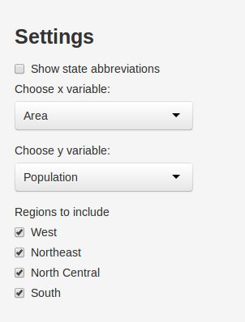

The app I created was made using Shiny and R.
It can be found here on shinyapps.io.
It produces customizable scatter plots using data for each state in the United States.
Collin
The app I created was made using Shiny and R.
It can be found here on shinyapps.io.
It produces customizable scatter plots using data for each state in the United States.
Data for each state includes eight different categories found in state.x77.
The data is taken from the 1970s, so it is not up-to-date.
head(state.x77,3)
## Population Income Illiteracy Life Exp Murder HS Grad Frost Area
## Alabama 3615 3624 2.1 69.05 15.1 41.3 20 50708
## Alaska 365 6315 1.5 69.31 11.3 66.7 152 566432
## Arizona 2212 4530 1.8 70.55 7.8 58.1 15 113417
dim(state.x77)
## [1] 50 8
Widgets in the sidebar allow you to customize the plot.
A checkbox toggles whether the state abbreviations are shown next to the corresponding data points.
The variables to be plotted against each other can be selected with the drop-down lists.
A checkbox group determines which regions are shown in the plot (West, Northeast, North Central, South)

The scatter plot will show the data for x and y that have been selected and only for the regions selected. A regression line is added to the plot to show the line of best fit. The equation for this line and its R-squared value is shown below the plot.